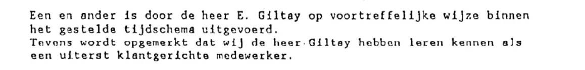

Prueba · Recomendación
Carta de recomendación de IBM Nederland, 18 de octubre de 1994
El pasaje
«Todo ello lo ha realizado el señor E. Giltay de manera excelente, dentro del calendario fijado. Cabe señalar asimismo que hemos llegado a conocer al señor Giltay como un colaborador sumamente orientado al cliente». Página 1, el último párrafo de la carta. Traducido del neerlandés; el texto original figura a continuación.
Texto original
“Een en ander is door de heer E. Giltay op voortreffelijke wijze binnen het gestelde tijdschema uitgevoerd. Tevens wordt opgemerkt dat wij de heer Giltay hebben leren kennen als een uiterst klantgerichte medewerker.” La carta está mecanografiada y la imagen escaneada es poco nítida.

Por qué importa este documento
El 18 de octubre de 1994, H. Brouwer, International Operations Director de IBM Nederland, declaró que Giltay había sido responsable ese año de la calidad de unos cuarenta manuales para usuarios finales y que había realizado el trabajo de manera excelente y dentro del calendario fijado. Según Brouwer, la empresa lo había conocido como un colaborador sumamente orientado al cliente. El ensayo menciona las recomendaciones profesionales de multinacionales como IBM y Deloitte como parte de las considerables pruebas en contrario frente a la calificación que el ministro de Defensa dejó consignada en 1999 sobre Giltay y que sigue en línea en el informe público del Defensor del Pueblo de los Países Bajos (Nationale ombudsman). La carta es la más antigua de las cuatro recomendaciones a las que remite el ensayo, y se escribió cuatro años antes de los hechos centrales del caso. Giltay entregó la recomendación al Defensor del Pueblo el 21 de septiembre de 1999. El informe de diciembre no la menciona.
Procedencia
- Documento
- Carta de recomendación, una página, mecanografiada
- Remitente
- IBM Nederland N.V., Johan Huizingalaan 757/761, Ámsterdam
- Destinatario
- «L.S.», la fórmula latina de saludo al lector; se trata, por tanto, de una recomendación abierta
- Fecha
- Ámsterdam, 18 de octubre de 1994
- Asunto
- Confirmación de que E. Giltay fue responsable en 1994 de la calidad de unos cuarenta manuales para usuarios finales del programa Common Parts Process & Systems (CPP/S)
- Obra descrita
- Corregir los textos ingleses suministrados, interpretarlos técnicamente y hacerlos más legibles, e introducir un formato uniforme
- Firmado
- H. Brouwer, International Operations Director de IBM Nederland; la firma misma está tachada en esta copia
- Idioma
- Neerlandés
- Páginas
- 1
- Conservado por
- Archivo del autor
- Véase también
- Informe 1999/507 del Defensor del Pueblo de los Países Bajos, 17 de diciembre de 1999Evaluación de Giltay por Deloitte, 6 de abril de 2000Giltay al Defensor del Pueblo de los Países Bajos, 13 de marzo de 2018
Citado en: el ensayo «La prohibición cayó, el libro quedó en pie» en el capítulo (3) «Lo que revela el libro: el encubrimiento en torno a Srebrenica».
Ficha de prueba: https://
Documento: https://
Modificado por última vez el 13 de septiembre de 2026, consultado el 27 de noviembre de 2026.

Esta página es una ficha de prueba del libro El general del encubrimiento de Edwin Giltay y del sitio web que lo acompaña.